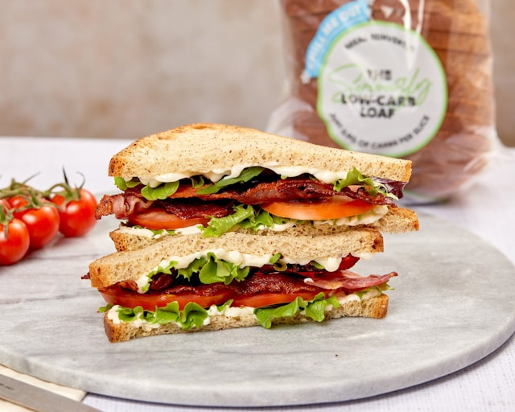

BLT
This simple sandwich is the definition of comfort food for me. you get the irresistible salty snap of crispy bacon, the cool crunch of lettuce, and the burst of fresh, juicy tomato, all cushioned by a creamy layer of mayonnaise on toasted bread.
Ingredients
- 2 Slices of Bread
- 3 Strips of Bacon
- 1 Tomato
- 1 Lettuce
- Mayonaise
- Salt
- Pepper
Instructions
- Cook the bacon until it is crispy but not burnt. You can do this in a skillet, in the oven, or in a microwave. Drain the cooked bacon on a paper towel-lined plate to remove excess grease.
- Slice your tomato thickly. Lay the slices on a paper towel and sprinkle them lightly with salt and pepper.
- Toast the bread slices until golden brown.
- Assemble the sandwich. Spread a generous layer of mayonnaise on one side of each slice of toasted bread. On one slice of bread, layer the lettuce, bacon, and tomato slices and top with the other slice of bread.
- Serve and enjoy!